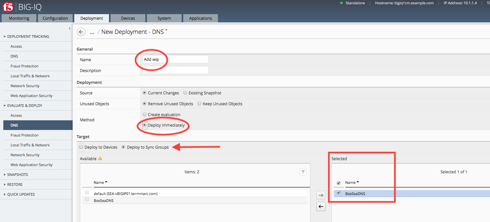
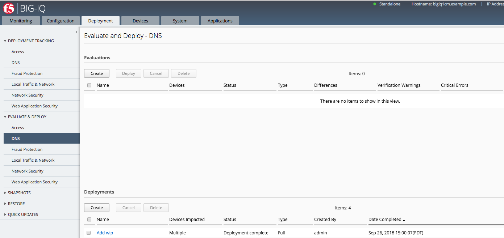

F5 BIG-IQ & Cloud Edition Lab > Class 10: BIG-IQ DNS > Module 2: Wide-IP Configuration Source | Edit on
Lab 2.1: Creating a WIP for GSLB¶
A wide IP (WIP) maps a fully-qualified domain name (FQDN) to one or more pools of virtual servers that host the content of a domain. When an LDNS issues a DNS name resolution for a wide IP, the configuration of the wide IP indicates which pools of virtual servers are eligible to respond to the request, and which load balancing methods BIG-IP DNS uses to select the pool.
For this lab, we will be creating a WIP to be used on the devices in the BosSeaDNS sync group. The create a WIP, navigate to Configuration > DNS > GSLB > Wide IPS and click the Create Button.

In the New Wide IP section, fill out the name (Must be a FQDN) with *www.example.com. Next, select the BosSeaDNS sync group and define the type as A (leave the rest of the options as default). There are the same options you would see on the BIG-IP TMUI for creating a WIP. To go to the next step, click on the Add Pool button.

For the pool, click the dropdown button and select the /common/site36.example.com Virtual server. There is an option to select more than one pool by clicking on the Add/Remove button.

Click Save and Close and you are brought back to the Create Wide IP screen. Verify the settings are correct and click the Save and Close button. You should be brought back to the Wide IP screen and the newly created WIP should be there.
Note
The WIP will show up as “Waiting for initial data collection” until the configuration is pused to the BIG-IPs and they are able to run their health checks.
{kind=link}
Next, navigate to Deployment > Evaluate & Deploy > DNS and click Create under Deployments

On the New Deployment screen, Name the change, select Deploy immediatly, Deploy to Sync Groups and choose BosSeaDNS > click Deploy
{kind=link}
Note
A warning will pop up about deploying immediatly. Ignore the warning and click Deploy
{kind=link}
When the deployment is complete, it will be listed under the Deployments section with the status.
{kind=link}
To verify the configuration was done correctly, open the TMUI for one of the BosSeaDNS BIGIPs and navigate to DNS > GSLB > Wide IPs and the newly created www.example.com wip should be there with an available status.

Note
Lab complete